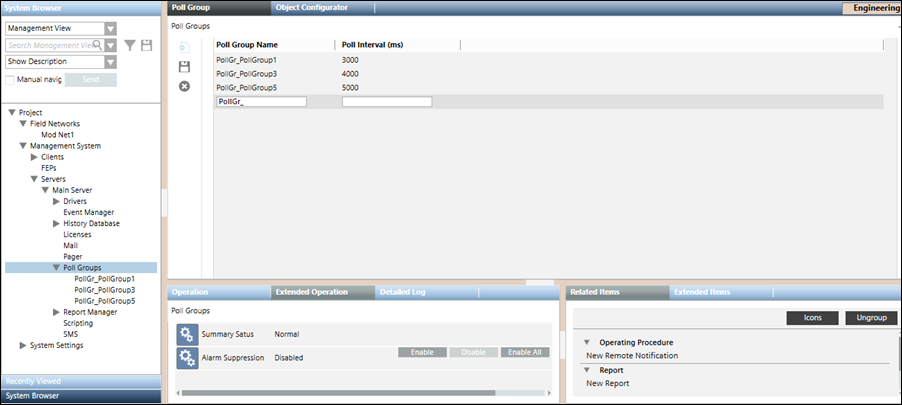

- Poll Groups
This section provides background information on Poll Groups. For related procedures, see the step-by-step section.

Poll Groups allow you to assign different polling intervals to individual data points. They also enable values to be polled more or less frequently. For example, by reducing the polling interval for values that do not need to be polled frequently, network traffic can be reduced.
The Poll Groups workspace allows you to create new poll groups, modify poll intervals of existing poll groups, and delete poll groups.
Poll Groups Toolbar | ||
Icon | Name | Description |
| Add New Poll Group | Adds an empty row to add a new entry for the poll group name and its poll interval. |
| Save | Saves the poll group entry. |
| Delete | Deletes an existing poll group entry. |


Item | Description |
Poll Group Name | Name of the poll group. The name of the poll group must begin with the following mandatory prefix “PollGr_“. The poll group is not created in the system if the prefix is missing. |
Poll Interval (ms) | Poll interval (in milliseconds) of the poll group |